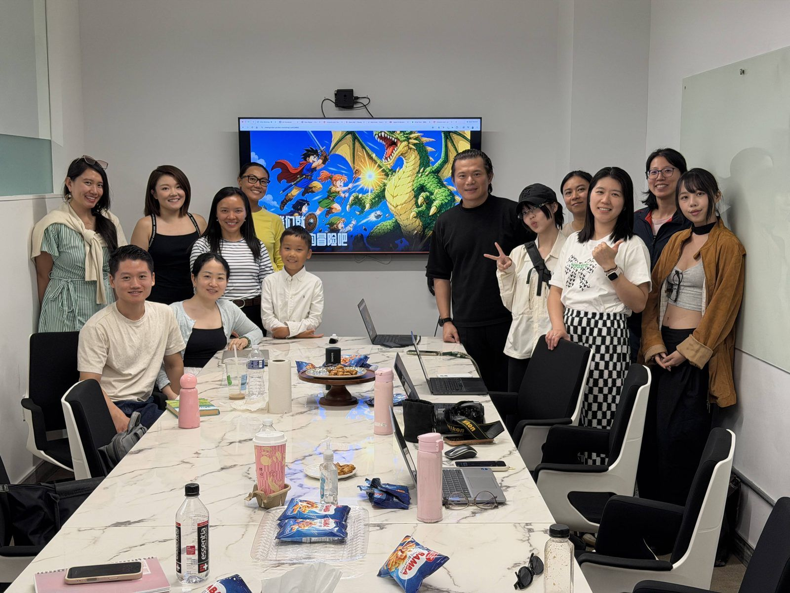
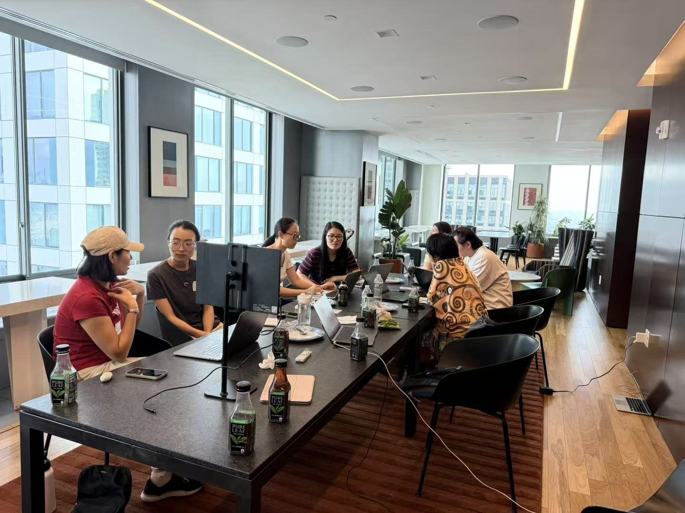
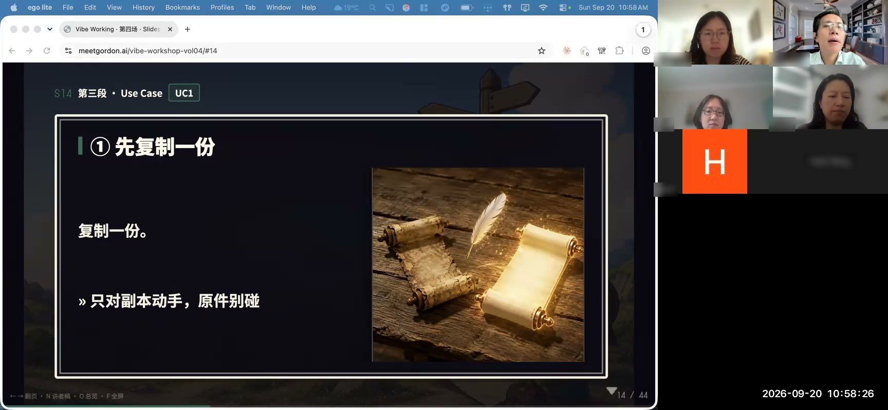

我想帶超過 200 個人 onboarding agentic AI，讓他們敢闔上電腦，但不是把工作忘掉

我想在明年五月畢業前，帶超過 200 個不寫程式的人，真正用上 agentic AI。
他們來自不同的行業，不同的年紀。我希望他們把省下來的時間，拿去做更有意義的事：陪家人，見朋友。
我覺得我做得到。八月到九月，我辦了四場 workshop，已經有快五十個人坐到了電腦前：做金融的，做審計的，做法律的，教書的，做藝術的。

我先闔上了自己的電腦
這件事，先發生在我身上。
去年年底開始，我把生活一點一點搬到了 agent 上。最大的變化，是我終於敢闔上電腦了。出門不必再背著它，手機也看得少了。
可是闔上電腦，不是把工作忘了。靈感來了，對著錄音筆說幾句就好，不必當下處理，也不用再把工作一直塞在腦子裡。那些內耗的事，agentic AI 替我接了過去：PPT 和 Excel 沒完沒了的排版，錄音和筆記的整理，還有一望無際的表格。
回頭看，很多時候我以為自己在工作，其實只是在內耗。工作裡最大的內耗來自這些摩擦，思考本身倒沒那麼耗人。摩擦少了，我才能放心去陪孩子，甚至出門玩，不用再擔心工作做不完。
所謂 work-life balance，從來沒有人抱怨 life 太多。失衡的，一直是 work。
新的範式，還沒有被寫出來
可是這條路，對不寫程式的人並不好走。
我是中年出來留學、轉行的人：大學讀臨床醫學，後來在北京做了很多年廣告，現在在紐約讀互動設計，想探索的是 AI 時代的 UI/UX。在我看來，很多人卡住，不是能力的問題，是工具設計出來的樣子，和我們真正用它的樣子之間，還隔著一段距離。
我相信，AI 會重構人們對 UI/UX 的理解。可是課堂上學到的，已經不足以讓我看清未來。課程教的，都是已經發生過的事；新的範式，還沒有被確立。
了解它最好的方式，就是去創造它。
這是我辦這個 workshop 的原因之一：我想親眼看到每個人怎麼用這些工具，看見大家卡在哪裡、痛在哪裡，再去想下一代 AI 的 UI/UX 會長成什麼樣。與其押一次 hackathon 的 big shot，我更想做一件能一直做下去的事。當然，也想跟大家真正交個朋友。
這個系列
接下來，我會一場一場地寫：那天發生了什麼，大家卡在哪裡，我後來又改了什麼。如果你想自己上手，或者正要帶一群不寫程式的同事上手，這個系列是寫給你的。

我也希望把 workshop 帶到更多地方。如果你的公司、學校或社群想辦一場，我很樂意過去，而且是免費的：我真正想做的，是幫到更多人，也連結更多人。我更喜歡實體，面對面更真誠，也更能認識每一個人，紐約一帶都願意跑一趟；線上也可以，中文、英文都能講。想聊聊的話，歡迎寫信給我：hi@meetgordon.ai。
歡迎所有人把我的 workshop 帶到你們的 community。